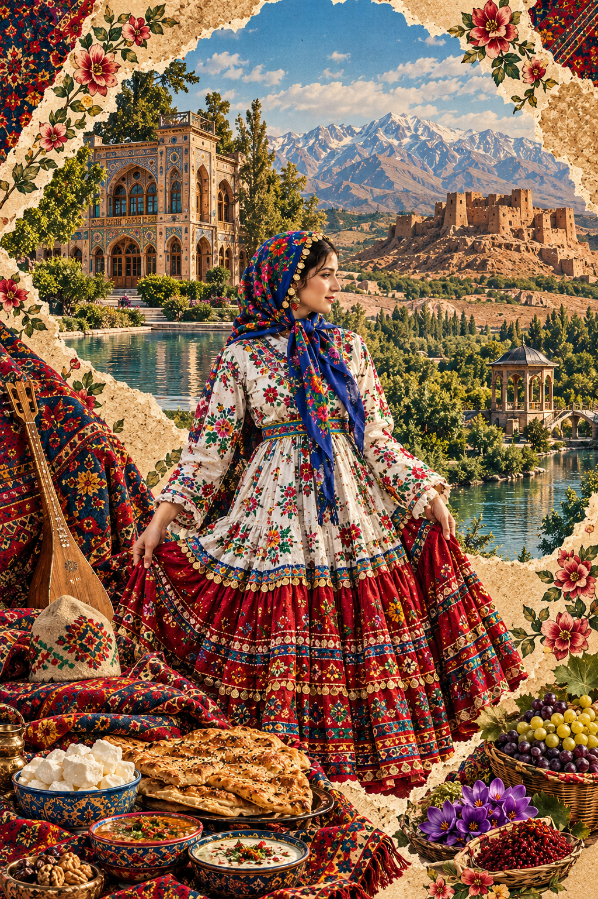
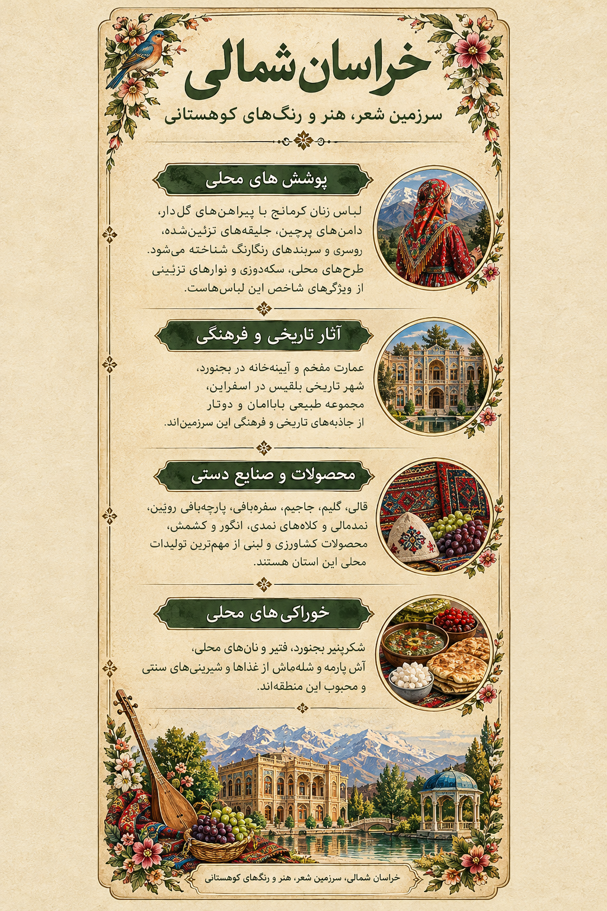

۱. اثر هنری | روایت یک سرزمین
1. The Artwork | A Region's Story
در خراسان شمالی، رنگ لباسها، نقش پارچهها و شیوهٔ آراستن پوشش، بخشی از خاطرهٔ فرهنگی مردمانی است که در کنار یکدیگر زندگی کردهاند. این اثر، نگاهی هنری به تنوع پوشش زنان و رنگهای زندهٔ این سرزمین دارد؛ از دشتهای باز تا روستاهای کوهپایهای.
In North Khorasan, clothing colors, textile patterns, and ways of dressing form part of the cultural memory of communities that have lived alongside one another. This artwork offers an artistic view of women's dress and the region's vivid colors, from open plains to mountain villages.

اثر هنری خراسان شمالی از مجموعهٔ «ایران، هزار رنگ»
North Khorasan artwork from the Iran, A Thousand Colors collection
«هر رنگ، نشانی از یک خاطره؛ هر نقش، روایتی از مردمانی که فرهنگ خود را زنده نگه داشتهاند.»
“Every color holds a memory; every pattern tells the story of people keeping their culture alive.”
این اثر، بازخوانی هنری پوشش محلی است؛ نه بازسازی یک لباس واحد برای همهٔ اقوام منطقه.
This artwork is an artistic interpretation of regional dress, not a reconstruction of one outfit shared by every community.
۲. پوشش زنان | رنگ، نقش و هویت
2. Women's Dress | Color, Pattern, and Identity
خراسان شمالی از نظر فرهنگی منطقهای متنوع است و گروههای قومی گوناگونی، از جمله کرمانجها و ترکمنها، در آن زندگی میکنند. به همین دلیل، پوشش زنان در سراسر استان یکسان نیست و با توجه به قومیت، محل زندگی، سن، مناسبت و سلیقهٔ خانوادگی تفاوت دارد.
North Khorasan is culturally diverse, with communities including Kurmanj Kurds and Turkmen people. Women's clothing is therefore not uniform throughout the province; it varies with community, locality, age, occasion, and family tradition.

لیبل اطلاعاتی و روایت فرهنگی اثر
Artwork information label and cultural story
دامنها و لایههای رنگی
Skirts and Layers of Color
در برخی پوششهای محلی، دامنهای چیندار و پارچههای رنگی جلوهٔ چشمگیری دارند. جنس پارچه، حجم دامن و ترکیب رنگها با توجه به سنت محلی و نوع مراسم تغییر میکند.
In some local outfits, pleated skirts and colorful fabrics create a striking appearance. Fabric, skirt volume, and color combinations vary with local traditions and the occasion.
روسری و سربند
Headscarves and Head Coverings
روسریها و سربندهای رنگی در پوشش زنان منطقه جایگاه مهمی دارند. شیوهٔ بستن، طرح و رنگ آنها میتواند در میان روستاها و گروههای فرهنگی متفاوت باشد.
Colorful scarves and head coverings play an important role in women's regional dress. Their patterns, colors, and ways of tying them can differ between villages and cultural communities.
جلیقه، بالاپوش و تزئینات
Vests, Outerwear, and Decoration
در برخی لباسهای محلی، جلیقهها و بالاپوشها با پارچههای طرحدار، نوارهای تزئینی یا دوختهای آراسته همراه میشوند. این جزئیات بخشی از زیبایی و هویت بصری لباساند.
Some traditional outfits feature vests and outer garments decorated with patterned fabrics, ornamental trims, or detailed stitching. These elements contribute to the visual identity of the clothing.
تنوع قومی و محلی
Ethnic and Local Diversity
پوشش زنان کرمانج، ترکمن و دیگر جوامع منطقه را نباید یکسان فرض کرد. هر سنت پوششی تاریخ و ویژگیهای خود را دارد و در طول زمان نیز دستخوش تغییر شده است.
The clothing traditions of Kurmanj, Turkmen, and other communities should not be treated as identical. Each has its own history and characteristics, and all have evolved over time.
برای معرفی دقیقتر هر نوع لباس، بررسی منابع مردمنگاری و تصاویر مستند همان جامعه ضروری است.
More specific clothing identifications require ethnographic sources and documented images from the relevant community.
۳. روستاها و زندگی بومی
3. Villages and Local Life
فرهنگ خراسان شمالی فقط در بناهای تاریخی خلاصه نمیشود؛ روستاها، شیوههای کار، موسیقی، صنایعدستی و آیینهای خانوادگی نیز بخشی از میراث زندهٔ این منطقهاند.
North Khorasan's culture extends beyond historic monuments. Its villages, working traditions, music, handicrafts, and family customs are also part of the region's living heritage.
روستای رویین
Rooyin Village
روستای رویین در شهرستان اسفراین به هنر نساجی سنتی و پارچهبافی شهرت دارد. این مهارت، پیوندی میان زندگی روزمره، دانش نسلهای پیشین و هنر دست ایجاد کرده است.
Rooyin village in Esfarayen is known for traditional textile weaving. This craft connects everyday life with inherited knowledge and handmade artistry.
بجنورد و پیرامون آن
Bojnord and Its Surroundings
بجنورد، مرکز استان، محل تلاقی تجربههای فرهنگی گوناگون است. بازارها، خانههای قدیمی و روستاهای اطراف، بخشهایی از زندگی اجتماعی و سنتهای محلی را بازتاب میدهند.
Bojnord, the provincial capital, brings together diverse cultural experiences. Its markets, old houses, and surrounding villages reflect aspects of local social life and tradition.
اسفراین و روستاهای پیرامون
Esfarayen and Nearby Villages
در محدودهٔ اسفراین، زندگی کشاورزی، باغداری، دامداری و هنرهای بومی با جغرافیای منطقه پیوند خوردهاند. شیوههای زندگی و پوشش در روستاهای مختلف میتواند تفاوت داشته باشد.
Around Esfarayen, farming, orchards, livestock keeping, and local crafts are connected to the region's geography. Everyday life and dress can differ from one village to another.
موسیقی دوتار
Dotar Music
دوتار و روایتهای آوازی از نشانههای فرهنگی مهم بخشهایی از خراسان شمالیاند. موسیقی محلی، داستانها، خاطرهها و تجربههای جمعی را از نسلی به نسل دیگر منتقل میکند.
The dotar and sung storytelling are important cultural expressions in parts of North Khorasan. Local music carries stories, memories, and shared experiences across generations.
۴. تاریخ، معماری و طبیعت
4. History, Architecture, and Nature
عمارت مفخم
Mofakham Mansion
عمارت مفخم از بناهای تاریخی شاخص بجنورد است. تزئینات معماری و کاشیکاریهای آن، جلوهای از هنر و سلیقهٔ دورهٔ قاجار را نشان میدهد.
Mofakham Mansion is one of Bojnord's notable historic buildings. Its architectural details and tilework reflect artistic tastes of the Qajar period.
آینهخانهٔ مفخم
Mofakham Mirror House
آینهخانهٔ مفخم با تزئینات داخلی و جزئیات معماری خود، بخشی از میراث تاریخی بجنورد است و برای شناخت هنرهای تزئینی گذشته اهمیت دارد.
Mofakham Mirror House, with its interior decoration and architectural details, forms part of Bojnord's historic heritage and offers insight into decorative arts of the past.
شهر تاریخی بلقیس
Historic City of Belqis
محوطهٔ تاریخی بلقیس در نزدیکی اسفراین، بقایای شهری کهن را در خود جای داده است. این مجموعه یادآور پیشینهٔ تاریخی و اهمیت سکونتگاههای منطقه در گذر زمان است.
The historic site of Belqis near Esfarayen contains the remains of an ancient city. It recalls the region's long history and the importance of its settlements over time.
بشقارداش و باباامان
Besh Qardash and Baba Aman
این تفرجگاههای طبیعی در اطراف بجنورد، با چشماندازهای سبز و فضای مناسب گردش، بخشی از جاذبههای طبیعی شناختهشدهٔ استان به شمار میروند.
These natural recreation areas near Bojnord are known for their green surroundings and scenic landscapes, making them familiar destinations within the province.
طبیعت، تاریخ و فرهنگ در خراسان شمالی کنار هم قرار گرفتهاند؛ هر روستا و هر بنای تاریخی، دریچهای به روایتی دیگر است.
In North Khorasan, nature, history, and culture meet. Every village and historic building opens a window onto another story.
۵. خوراکیها و طعمهای محلی
5. Local Foods and Flavors
خوراکهای محلی خراسان شمالی از محصولات کشاورزی، لبنیات، غلات و شیوههای آشپزی خانوادگی تأثیر گرفتهاند. دستور پخت و نام خوراکها ممکن است از شهری به شهر دیگر تفاوت داشته باشد.
North Khorasan's local cuisine draws on agricultural produce, dairy, grains, and family cooking traditions. Recipes and food names can vary between towns and communities.
فتیر محلی
Local Fatir Bread
فتیر نوعی نان محلی است که در شکلها و شیوههای گوناگون پخته میشود. این نان در برخی خانوادهها برای صبحانه، پذیرایی یا مناسبتهای خاص تهیه میشود.
Fatir is a traditional bread made in different forms and styles. In some households, it is prepared for breakfast, hospitality, or special occasions.
آشها و خوراکهای خانگی
Soups and Home-Cooked Dishes
آشها و غذاهای خانگی با استفاده از غلات، حبوبات و سبزیهای در دسترس، بخشی از فرهنگ غذایی منطقه را تشکیل میدهند. ترکیب مواد و نام غذاها در خانوادهها و نواحی مختلف متفاوت است.
Soups and home-cooked dishes made with grains, legumes, and available herbs are part of the region's food culture. Ingredients and names vary among households and localities.
لبنیات و فرآوردههای محلی
Dairy and Local Products
در نواحی روستایی و دامداری، شیر و فرآوردههایی مانند ماست و پنیر در سفرهٔ محلی جای دارند. روش تهیه و طعم این محصولات میتواند بر اساس سنت خانوادگی متفاوت باشد.
In rural and livestock-raising areas, milk and dairy products such as yogurt and cheese feature in local meals. Preparation methods and flavors can differ by family tradition.
شیرینیها و نانهای آیینی
Sweets and Occasion Breads
نانها و شیرینیهای خانگی در پذیراییها و مناسبتهای خانوادگی نقش دارند. برای معرفی هر نوع شیرینی بهعنوان خوراک ویژهٔ یک روستا، بهتر است نام و شیوهٔ تهیه از منبع محلی معتبر بررسی شود.
Homemade breads and sweets play a role in hospitality and family occasions. To identify a particular sweet as unique to a village, its name and preparation should be verified through a reliable local source.
۶. محصولات بومی و هنرهای دستی
6. Local Products and Handicrafts
نساجی سنتی رویین
Rooyin Traditional Textiles
پارچهبافی سنتی رویین از هنرهای شناختهشدهٔ منطقه است. این هنر، مهارت دست و دانش بافندگی را با طرحها و کاربردهای روزمره پیوند میدهد.
Rooyin's traditional textile weaving is a recognized local craft. It connects hand skills and weaving knowledge with patterns and everyday uses.
قالی، گلیم و جاجیم
Carpets, Kilims, and Jajim
بافت قالی، گلیم و جاجیم در بخشهایی از استان رواج دارد. نقشها، رنگها و شیوهٔ بافت میتوانند از یک منطقه به منطقهٔ دیگر تفاوت داشته باشند.
Carpet, kilim, and jajim weaving are practiced in parts of the province. Patterns, colors, and weaving methods may differ from one locality to another.
محصولات کشاورزی و باغی
Agricultural and Orchard Products
کشاورزی و باغداری از فعالیتهای مهم اقتصادی منطقهاند. محصولات دقیق هر ناحیه به آبوهوا، منابع آب و نوع کشت بستگی دارد و بهتر است در معرفی محلی به دادههای معتبر همان منطقه تکیه شود.
Farming and orchards are important economic activities in the region. Local produce depends on climate, water resources, and cultivation, so specific claims should be based on reliable local information.
موسیقی و هنرهای روایی
Music and Storytelling Traditions
موسیقی دوتار و روایتهای شفاهی، بخشی از میراث فرهنگی استان هستند. این هنرها در کنار صنایعدستی، بخشی از هویت زندهٔ مردم منطقه را شکل میدهند.
Dotar music and oral storytelling form part of the province's cultural heritage. Alongside handicrafts, these traditions contribute to the region's living identity.
۷. منابع و مطالعهٔ بیشتر
7. Sources and Further Reading
این صفحه روایتی مقدماتی از فرهنگ و پوشش خراسان شمالی است. برای پژوهش دقیقتر دربارهٔ لباس هر قوم، روستا و آیین، باید اطلاعات با منابع مردمنگاری، موزهای و محلی تطبیق داده شود.
This page offers an introduction to the culture and dress of North Khorasan. More detailed research on the clothing of each community, village, and tradition should be checked against ethnographic, museum, and local sources.
پیوندها به درگاههای مرجع هستند؛ برای هر ادعای جزئی، منبع و صفحهٔ دقیق باید جداگانه بررسی شود.
These links lead to reference portals; specific claims should be checked against individual source pages.